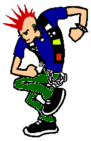

| 
i"..its a real cool club and
your not a part of it.." - Screeching Weasel |
everyone has a message.
everyone has something to say. but does it really matter? is it worth defacing a site to
say "owned by f1ber?" or "the original cyber gangsta" or "these
are the people who are good and these are the people who are bad"? Is it worth all
the hassle? damn straight. or no one would do it. you can't justify breaking the law by
saying "i did this for a reason". it just doesn't matter. PHC might post long
political rants, but that doesn't justify illegally entering that computer. PHC has good
intentions, but do you think it will really matter? will the UN look at that and say
"geez..PHC wants us to help Chechnya, we better go". pyrostorm666 even put 'I'm
gonna be on attrition' on one of his defacements ...how clever. isn't that what its all
about? getting your name known. ytcracker is a full blown media whore now. good for him.
anyone that says its for the message wouldn't mail hacked@attrition.org.
|